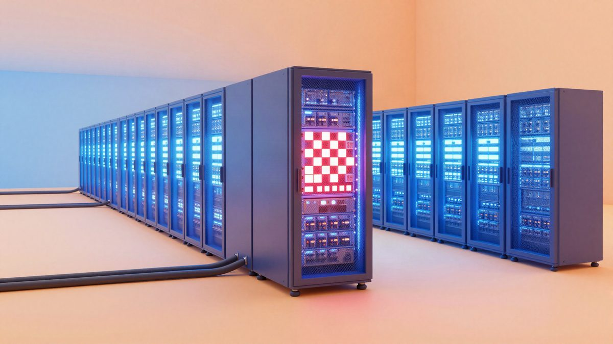

Hrvatska planira uložiti 932 milijuna eura u umjetnu inteligenciju do 2032.

Hrvatska do 2032. planira uložiti 932 milijuna eura u umjetnu inteligenciju, uz potporu Europske unije. Nacionalni plan ima 33 mjere, a prvi akcijski plan, do 2028., vrijedi oko 382 milijuna eura. Među mjerama su hrvatska AI tvornica s 39 milijuna eura i veliki jezični model za hrvatski jezik s 2,6 milijuna eura.
Hrvatska do 2032. planira uložiti ukupno 932 milijuna eura u razvoj umjetne inteligencije, uz potporu Europske unije. Nacionalni plan predstavio je ministar pravosuđa, uprave i digitalne transformacije Damir Habijan, zajedno s akcijskim planom za provedbu do 2028. Plan obuhvaća 33 mjere, a najveći dio sredstava namijenjen je istraživanju, inovacijama i razvoju gospodarstva. Do 15. studenoga bio je otvoren na e-Savjetovanju.
U izradi plana sudjelovala su 133 člana stručne radne skupine iz 55 institucija, a održano je oko 80 sastanaka. Za prvi akcijski plan, do 2028., predviđeno je oko 382 milijuna eura.
AI tvornica i jezični model
Za hrvatsku AI tvornicu i nacionalnu računalnu infrastrukturu predviđeno je 39 milijuna eura. Infrastruktura bi uključivala GPU kapacitete, chipove, razvojno okruženje i stručnu podršku. Istraživači, sveučilišta, javne institucije i kompanije mogli bi na njoj razvijati, trenirati, testirati i validirati vlastite AI modele. Domaći startup tako ne bi morao sam financirati GPU infrastrukturu, što je za manje kompanije često preskupo. Tko će moći pristupiti infrastrukturi i pod kojim uvjetima, još nije poznato.
Za veliki jezični model za hrvatski jezik predviđeno je 2,6 milijuna eura. Plan uključuje prikupljanje i pripremu kvalitetnih jezičnih podataka za treniranje. Model bi trebao bolje razumjeti hrvatski jezik, domaću terminologiju i kontekst, a mogao bi se primjenjivati u javnoj upravi, pravosuđu, obrazovanju i gospodarstvu. Prema jednom od sugovornika, strani modeli već dosta dobro razumiju hrvatski.
Edukacija i javna uprava
Plan predviđa edukaciju 7.000 građana o osnovnoj AI pismenosti i 10.000 nastavnika za korištenje AI alata u nastavi, uz razvoj kurikuluma i obrazovnih materijala. Educirat će se i 5.000 javnih službenika, kojima bi se ponudila AI rješenja za obradu dokumenata, upravljanje podacima i razumijevanje poslovnih procesa. Za vaučere i mikrokvalifikacije namijenjeno je dodatnih 10 milijuna eura.
Za AI sustav unutar e-Građana predviđeno je šest milijuna eura. Zamišljen je kao asistent koji bi građanima objasnio njihova prava i dostupne usluge te im pomogao pri ispunjavanju obrazaca.
Podrška gospodarstvu
Oko 115 milijuna eura namijenjeno je uključivanju hrvatskih kompanija u strateške AI projekte, od čega 36 milijuna eura za startupove i scaleupove. Podrška uključuje rizični kapital, javno-privatna ulaganja, kredite, jamstva, akceleracijske programe i pomoć pri internacionalizaciji. Za AI vaučere za mala i srednja poduzeća predviđeno je dodatnih 800.000 eura.
Globalni kontekst
U isto vrijeme najveće tehnološke kompanije, među njima Anthropic, OpenAI, Google, Microsoft i Amazon, ulažu stotine milijardi dolara u podatkovne centre, specijalizirane chipove i energetsku infrastrukturu. Trošak ne čini samo treniranje modela, nego i inferencija, odnosno obrada svakog korisničkog upita.
Izvor: Netokracija
Povezani članci
- Mercor vrijedi oko 18 milijardi eura, a svaki od trojice osnivača ima oko 3,9 milijardi eura imovine12. studenoga 2026.
 Čovjek iz Chengdua s 4.000 juana (oko 500 eura) napravio je AI seriju od 96 epizoda i skupio 600 milijuna pregleda13. studenoga 2026.
Čovjek iz Chengdua s 4.000 juana (oko 500 eura) napravio je AI seriju od 96 epizoda i skupio 600 milijuna pregleda13. studenoga 2026. Tvorac OnlyFakea prvi put govori: lažne iskaznice po 15 dolara i sjevernokorejski IT radnici5. studenoga 2026.
Tvorac OnlyFakea prvi put govori: lažne iskaznice po 15 dolara i sjevernokorejski IT radnici5. studenoga 2026.